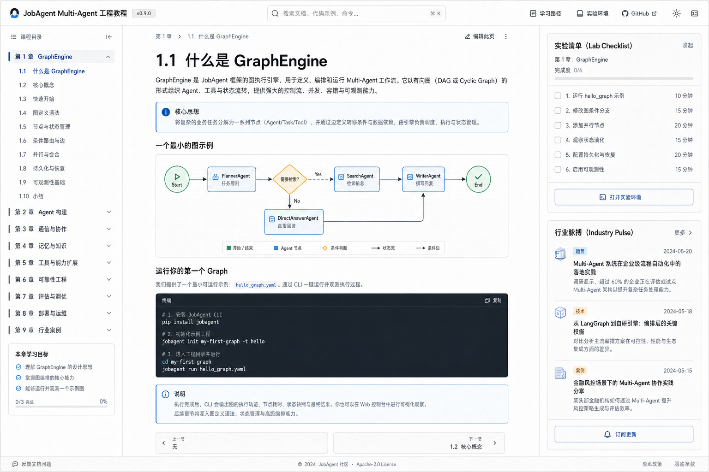

阅读方式
这套课程更像工程实验手册。每章先给你一个问题，再把问题放回 JobAgent 的真实文件、真实命令和真实调试路径里。
配图只承担教学任务：定位系统位置、解释状态变化、展示调试路径。代码块里的重点行会高亮，右侧注释告诉你为什么要看这一行。

全部章节
第 0 章：这不是聊天机器人，这是一个可运行的 Agentic Product先把 JobAgent 当成一个可以运行、暂停、恢复、验证、部署的产品，而不是一个 prompt demo。第 1 章：从 Pipeline 到 Graph：为什么 agent 工程首先是调度问题Agentic workflow 的第一层不是魔法，而是 node、edge、state、stop condition。第 2 章：Shared State：Multi-Agent 系统里的唯一事实表如果没有 typed shared state，multi-agent 很快会退化成互相转述的聊天记录。第 3 章：Bounded Agent：为什么每个 agent 都应该小而窄一个万能 agent 看起来省事，长期会变成不可测、不可恢复、不可解释的 prompt monster。第 4 章：StopReason：Agentic 系统不是一直跑到死StopReason 是 agent workflow 的刹车系统，也是调试与产品体验的共同语言。第 5 章：Human-in-the-loop：人工审批不是 UI 功能，是系统边界HITL 的本质是权限边界：哪些动作可以建议，哪些动作必须由人放行。第 6 章：Checkpoint 与 Resume：Agentic Workflow 的耐久执行能暂停不算难；能在正确位置恢复，而且不重复副作用，才是工程能力。第 7 章：Tool Use：Agent 什么时候应该调用工具工具是 agent 的手，但每只手都要有权限、预算、审计和失败语义。第 8 章：Memory 与 Story Bank：不是所有上下文都该塞进 PromptMemory 的第一原则：该结构化的结构化，该检索的检索，该短期的不要伪装长期。第 9 章：Local RAG：先理解检索，再上向量数据库RAG 不是接一个 vector DB，而是选择什么进入上下文的工程。第 10 章：MCP：把工具世界标准化MCP 可以理解为 agent 的工具协议层，但协议标准化不等于安全自动解决。第 11 章：LLM Provider：把模型调用隔离成可替换接口不要让业务节点直接散落 OpenAI、Anthropic 或其他 SDK 调用。第 12 章：LangGraph：从教学 GraphEngine 迁移到工业框架先理解本地 graph，再判断是否需要 LangGraph 的生产能力。第 13 章：Observability：Trace 是 Agent 系统的黑匣子Agent debug 的第一原则：不要只看最终回答，要看轨迹。第 14 章：Offline Eval：别靠感觉判断 Agent 有没有变好Agent 质量不能只靠肉眼体验，必须有回归样例和可重复评估。第 15 章：Guardrails：在 Agency 之前先做安全边界Guardrails 不是让模型更听话，而是让系统先拒绝不该处理的输入和动作。第 16 章：Web Product Surface：把 Workflow 变成可以用的产品Agent product 的 UI 不是装饰，它负责让用户看见状态、风险和下一步。第 17 章：Deployment：从本地 demo 到公开 portfolio部署 agent product，不只是把 API 跑起来，还要说明状态、成本和安全边界。第 18 章：10x Scale 与 Production Readiness：什么时候可以说它准备好了Production readiness 不是一句自信判断，而是一组关于流量、状态、恢复、安全和验证的证据。第 19 章：调试一本 Agent 系统：从现象回到 state、trace、nodeAgent debug 不应该从改 prompt 开始，而应该从证据链开始。第 20 章：工程选择题：什么时候该升级技术栈成熟的 AI infra 判断力，不是知道所有工具，而是知道什么时候不用它们。第 21 章：最终项目任务：把 JobAgent 改成你的 AI Infra Portfolio最后一章不是阅读，而是让读者完整交付一个新的 bounded agent。